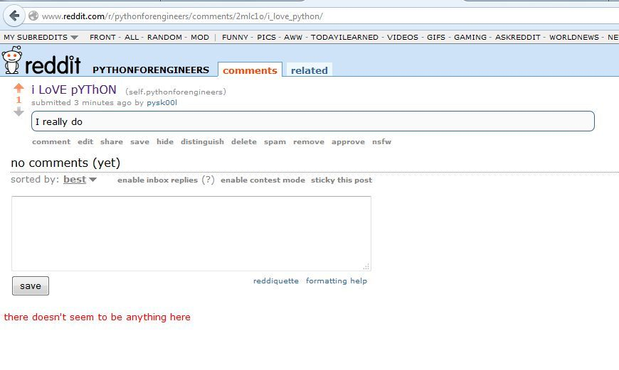
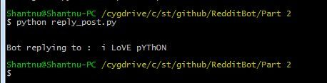
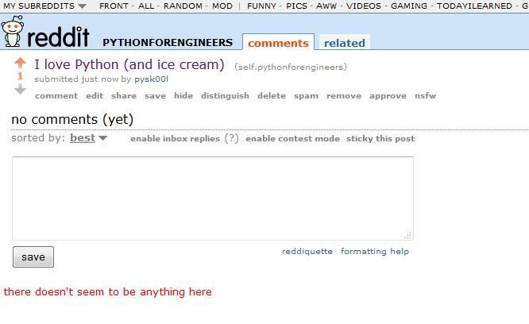

Build a Reddit Bot Part 2: Reply to posts

Part 1: Read posts from reddit
Part 4: Marvin the Depressed Bot
NOTE: Before we start, I have a request to make. I created a special Reddit for this series. Please please please stick to that. I don’t want you spamming other Reddits. The moderators may ban you, and Reddit may ban my user agent (please read part one if you don’t know what that means). So please stick to practising here:
https://www.reddit.com/r/pythonforengineers
This is my own sub-Reddit, and you have full permission to play in that region.
Before we start, all the source code is here.
Two things our bot needs to do
1.Search our subreddit for the words “I love Python” and reply to it. It can’t assume case sensitivity
2.Keep a list of posts it has already replied to, so we are not replying to the same post again and again.
We already looked at how to do (1) in Part 1.
To keep a track of posts we have replied to, we could use something like a database. To keep it simple, I’m going to use a simple text file.
Login to Reddit with your bot
If you entered your username and password in praw.ini, you should be able to post messages with no problem.
Open the file reply_post.py:
import praw
import pdb
import re
import os
We start off by importing everything we need.
# Create the Reddit instance
reddit = praw.Reddit('bot1')
This code is the same as before. We create a Reddit instance.
As mentioned earlier, I am going to store the posts we have replied to in a text file called posts_replied_to.txt. Each Reddit post has its own unique id. I am storing each in a newline. An example from a live run:
2maolz
2mans2
2m6th9
2m6tfg
2mapgg
To start off, we will assume this file doesn’t exist:
if not os.path.isfile("posts_replied_to.txt"):
posts_replied_to = []
If the file doesn’t exist, which will be true the first time you run this program, create an empty list posts_replied_to .
If the file does exist, we open it. Let’s look at the code first. We will go over it line by line:
else:
with open("posts_replied_to.txt", "r") as f:
posts_replied_to = f.read()
posts_replied_to = posts_replied_to.split("\n")
posts_replied_to = list(filter(None, posts_replied_to))
The above code is called if you have run the code at least once. Let’s go over it:
with open("posts_replied_to.txt", "r") as f:
If you have never used Python’s with keyword, it’s a great feature. It opens the files for us, will close it, and all handle any errors. Saves us having to use try-catch blocks and handling errors ourself.
posts_replied_to = f.read()
posts_replied_to = posts_replied_to.split("\n")
We read our file, and split on newline. Remember our file contains the submission ids as newlines? Splitting on it will create a list with all the ids. Taking the example I used earlier, we will get:
['2maolz', '2mans2', '2m6th9', '2m6tfg', '2mapgg', '']
However, the list might still contain some empty values. See the last value above, it is an empty element. We get rid of them:
posts_replied_to = list(filter(None, posts_replied_to))
Python 3 update: We need to convert the filter back to a list. Groan. Reason here.
We now have a list posts_replied_to that is either empty or contains the submission ids from last runs.
subreddit = reddit.subreddit('pythonforengineers')
for submission in subreddit.hot(limit=5):
This code is the same as before. We get the last 5 entries from our subreddit.
if submission.id not in posts_replied_to:
Remember I said each Reddit post gets a unique id? It is stored in_ submission.id_. We check if this id exists in our list of posts we have replied to.
If it doesn’t, we check if the post contains the words : “I love Python”:
if re.search("i love python", submission.title, re.IGNORECASE):
I am using regular expressions for the search. This is because the post can be in capital or not, or a mix. If the words _i love python _were found, we need to reply to the post. This is how you do it:
submission.reply("Botty bot says: Me too!!")
The reply() is the function that adds a comment to the current submission.
print("Bot replying to : ", submission.title)
posts_replied_to.append(submission.id)
The next important thing is to remember which posts we have replied to. So we add the id of the current post to our list posts_replied_to.
Finally, we write out our updated list back to the file:
with open("posts_replied_to.txt", "w") as f:
for post_id in posts_replied_to:
f.write(post_id + "\n")
And that’s it. Let’s give our bot a spin.
First, we post a message on our subreddit:

We then run our Python script. Notice the Bot figures out the latest post, and only replies to that one:

And then we reload our page to check that the bot has replied.

Give it a try
Change the bot message to something unique, so we know whose bot is running (otherwise we’ll have dozens of similar messages, with no idea who posted what). If you can’t think of anything unique, just attach your Reddit username.